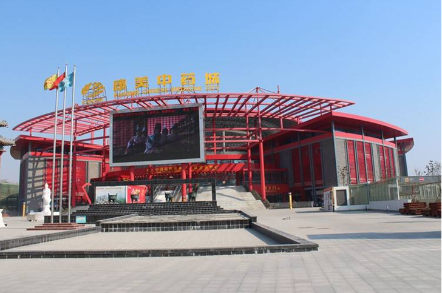

“中国•药都协同创新发展论坛”
342评
中国•药都协同创新发展论坛将于2018年2月3日在中华药都安徽亳州举行。本届论坛旨在研究和展望科技创新的发展趋势及面临机遇和挑战，整合利用亳州离岸孵化资源，积极推动“离岸研发、综合孵化、亳州产业化”产学研合作实践，完善企业治理结构，增强全要素投入，系统提升药都企业创新模式下的市场竞争力，树立产业科技创新发展标杆楷模。充分利用新经济优势，聚合产业集群优势，支持产业优化升级，实现产业向全球价值链中高端迈进，推动企业经济健康稳步发展
